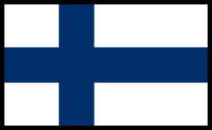
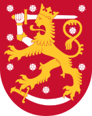

 
Финляндия
Финля́ндия(фин. Suomi МФА: [ˈsuo̯mi], швед. Finland МФА: [ˈfɪ̌nland]), официальное название — Финля́ндская Респу́блика (фин. Suomen tasavalta, швед. Republiken Finland; произношение на обоих языках) — государство в Северной Европе на восточном побережье Балтийского моря. На востоке граничит с Россией, на севере с Норвегией, на западе со Швецией. На юге ближайшим соседом является Эстония к югу от Финского залива. Столица и крупнейший город Финляндии — Хельсинки. Финляндия, по состоянию на 1 марта 2023 года, — относительно малонаселённая страна с населением в 5 568 637 человек, сосредоточенным в основном в южных и центральных частях страны. Конституция Финляндии определяет финский и шведский языки как национальные языки. В конце 2022 года говорящие на финском языке составляли 85,9 % населения (4 778 891 чел.), говорящие на шведском языке — 5,2 % населения (287 052 чел.), а говорящие на саамских языках — 0,04 % населения (2 035 чел.). Говорящие на других языках составляли 8,9 % (495 992 чел.) населения. Парламентская республика. С 5 февраля 2012 года должность президента занимает Саули Ниинистё. С 6 декабря 1917 года является независимым государством (в 2017 году отмечалось 100-летие независимости страны). Финляндия является членом Северного паспортного союза (с 1952), Организации Объединённых Наций (с 1955), Северного совета (с 1956), Европейского союза (с 1995), Шенгенского соглашения (с 1996) и НАТО (с 2023). Во «Всемирном докладе о счастье 2018», опубликованном ООН, Финляндия заняла первое место. В последующие четыре года Финляндия также была признана самой счастливой страной в мире. В 2010 году страна была на первом месте в списке «Лучшие страны мира» (англ. The world's best countries) по версии журнала Newsweek, а также является третьей в рейтинге равноправия полов. С 2011 по 2014 годы американский фонд «Fund for Peace» оценивал Финляндию как «самую стабильную страну мира».
Автор работы: CharaWein Мой Telegram: @Chara_Wein Мой GitHub: @Chara_Wein